NAVIGATION SYSTEM > DTC CHECK / CLEAR |
| START DIAGNOSTIC MODE |
Turn the engine switch on (IG).
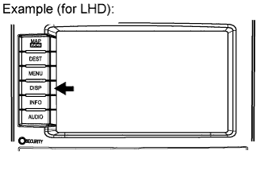 |
Press the "DISP" switch.
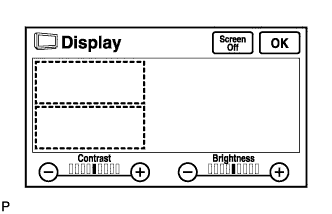 |
From the display quality adjustment screen, touch the corners of the screen in the following order: upper left → lower left → upper left → lower left → upper left → lower left.
The diagnostic mode starts and the "System Check Mode" screen will be displayed. Service inspection starts automatically and the result will be displayed.
| FINISH DIAGNOSTIC MODE |
Turn the engine switch off.
| DIAGNOSIS MENU |
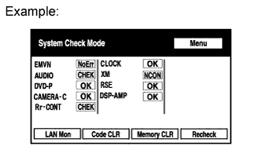 |
Press the "MENU" switch on the "System Check Mode" screen.
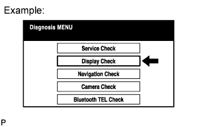 |
The "Diagnosis MENU" screen will be displayed.
| CHECK DTC (WITH DIAGNOSTIC MODE) |
Read the system check result.
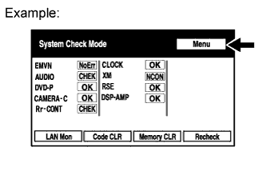 |
If the check result is "EXCH", "CHEK" or "Old", touch the displayed check result.
View the results on the "Unit Check Mode" screen and record them.
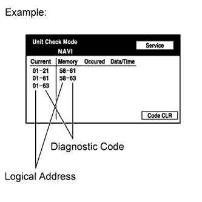 |
When proceeding to view the results of another device, press the "Service" switch.
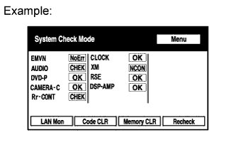 |
Return to the "System Check Mode" screen.
Read the communication diagnostic check result.
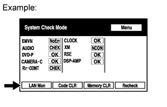 |
Return to the "System Check Mode" screen, and press the "LAN Mon" switch.
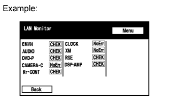 |
The "LAN Monitor" screen is displayed.
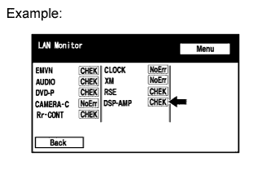 |
If the check result is "CHEK" or "Old", touch the displayed check result.
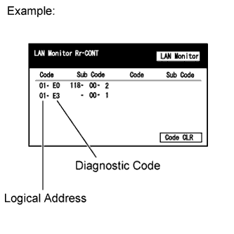 |
View the results on the individual communication diagnostic screen and record them.
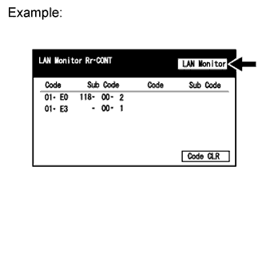 |
| DTC CLEAR/RECHECK (WITH DIAGNOSTIC MENU) |
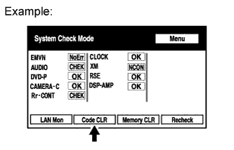 |
Clear DTC
Press the "Code CLR" switch for 3 seconds.
The check results are cleared.
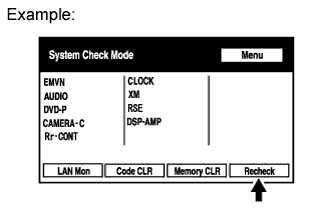 |
Recheck
Press the "Recheck" switch.
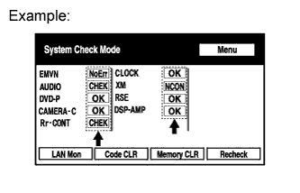 |
Confirm that all diagnostic codes are "OK" when the check results are displayed.
If a code other than "OK" is displayed, troubleshoot again.
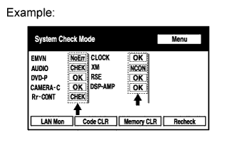 |
Press the "LAN Mon" switch to change to "LAN Monitor" mode.
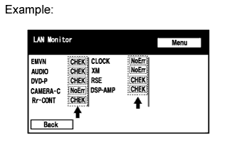 |
Confirm that all diagnostic codes are "No Err".
If a code other than "No Err" is displayed, troubleshoot again.